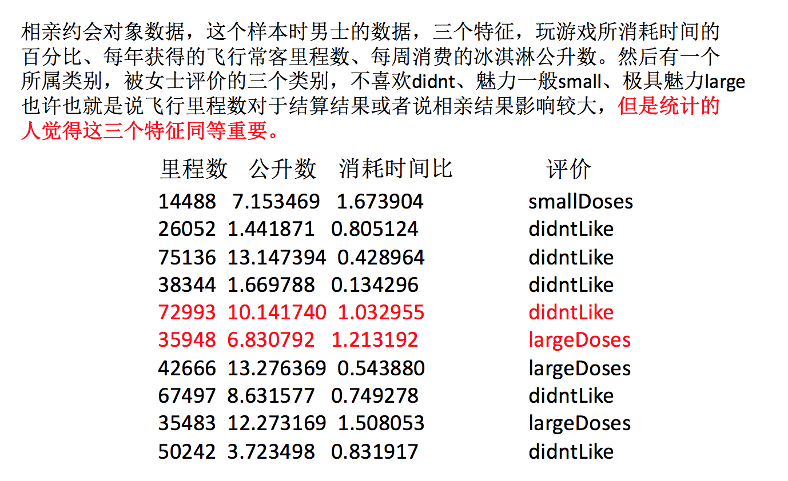

特征预处理
什么是特征预处理？
2.4.1 什么是特征预处理
# scikit-learn的解释
provides several common utility functions and transformer classes to change raw feature vectors into a representation that is more suitable for the downstream estimators.
翻译过来：通过一些转换函数将特征数据转换成更加适合算法模型的特征数据过程
可以通过上面那张图来理解
1 包含内容
- 数值型数据的无量纲化：
- 归一化
- 标准化
2 特征预处理API
sklearn.preprocessing
为什么我们要进行归一化/标准化？
- 特征的单位或者大小相差较大，或者某特征的方差相比其他的特征要大出几个数量级，容易影响（支配）目标结果，使得一些算法无法学习到其它的特征
约会对象数据

我们需要用到一些方法进行无量纲化，使不同规格的数据转换到同一规格
归一化
定义
通过对原始数据进行变换把数据映射到(默认为[0,1])之间
公式

作用于每一列，max为一列的最大值，min为一列的最小值,那么X’’为最终结果，mx，mi分别为指定区间值默认mx为1,mi为0
那么怎么理解这个过程呢？我们通过一个例子

API
sklearn.preprocessing.MinMaxScaler (feature_range=(0,1)… )MinMaxScalar.fit_transform(X)- X:numpy array格式的数据[n_samples,n_features]
- 返回值：转换后的形状相同的array
练习：数值变换
我们对以下数据进行运算，在dating.txt中。保存的就是之前的约会对象数据
!head /share/datasets/dating.txt
1、实例化MinMaxScalar
2、通过fit_transform()转换
import pandas as pd
from sklearn.preprocessing import MinMaxScaler
def minmax_demo():
"""
归一化演示
:return: None
"""
data = pd.read_csv("dating.txt")
print(data)
# 1、实例化一个转换器类
transfer = MinMaxScaler(feature_range=(2, 3))
# 2、调用fit_transform
data = transfer.fit_transform(data[['milage','Liters','Consumtime']])
print("最小值最大值归一化处理的结果：\n", data)
return None
minmax_demo()
问题：如果数据中异常点较多，会有什么影响？

归一化总结
注意最大值最小值是变化的，另外，最大值与最小值非常容易受异常点影响，所以这种方法鲁棒性较差，只适合传统精确小数据场景。
怎么办？
标准化
定义
通过对原始数据进行变换把数据变换到均值为0,标准差为1范围内
公式

作用于每一列，mean为平均值，σ为标准差
所以回到刚才异常点的地方，我们再来看看标准化

- 对于归一化来说：如果出现异常点，影响了最大值和最小值，那么结果显然会发生改变
- 对于标准化来说：如果出现异常点，由于具有一定数据量，少量的异常点对于平均值的影响并不大，从而方差改变较小。
API
sklearn.preprocessing.StandardScaler( )- 处理之后每列来说所有数据都聚集在均值0附近标准差差为1
StandardScaler.fit_transform(X)- X:numpy array格式的数据[n_samples,n_features]
- 返回值：转换后的形状相同的array
练习：数据归一化
#实例化StandardScaler
#通过fit_transform()转换
import pandas as pd
from sklearn.preprocessing import StandardScaler
def stand_demo():
"""
标准化演示
:return: None
"""
data = pd.read_csv("/share/datasets/dating.txt")
print(data)
# 1、实例化一个转换器类
transfer = StandardScaler()
# 2、调用fit_transform
data = transfer.fit_transform(data[['milage','Liters','Consumtime']])
print("标准化的结果:\n", data)
print("每一列特征的平均值：\n", transfer.mean_)
print("每一列特征的方差：\n", transfer.var_)
return None
stand_demo()
标准化总结
在已有样本足够多的情况下比较稳定，适合现代嘈杂大数据场景。
作业：
- 请问数值型数据、类别型数据特点有哪些？
- 请在下方代码框中应用
MinMaxScaler()实现对特征数据进行归一化
#
- 请在下方代码框中应用
StandardScaler实现对特征数据进行标准化
#